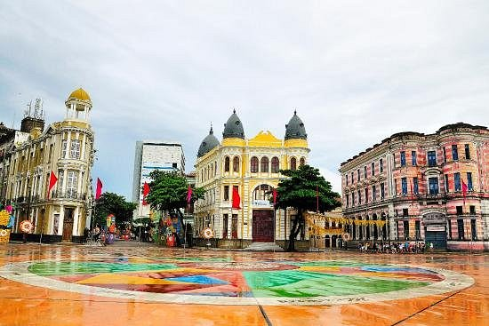

Marco Zero
Venha conhecer Recife!

O Marco Zero, na Praça Rio Branco, é conhecido como local de fundação da cidade de Recife e também como ponto inicial de contagem das distâncias calculadas a partir da cidade. O lugar é um dos ponots mais importantes na capital Pernambucana, pois é também uma região de forte movimento durante o Carnaval.
Aproveite sua visita para tirar uma foto com os dois marcos (o antigo e o novo), observar a vista para o Parque de Esculturas e os edifícios do Centro Cultural da Caixa e da Associação Comercial de Pernambuco.
Texto escrito por Camille Pantera, extraído do site Melhores Destinos 